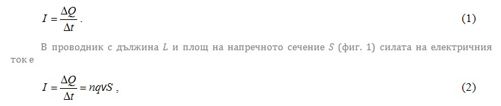
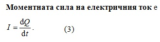
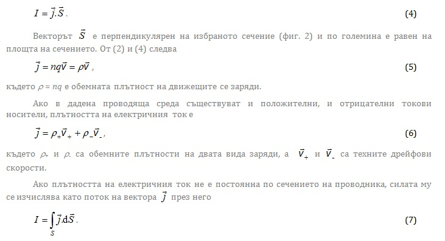
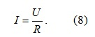
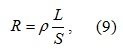
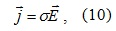
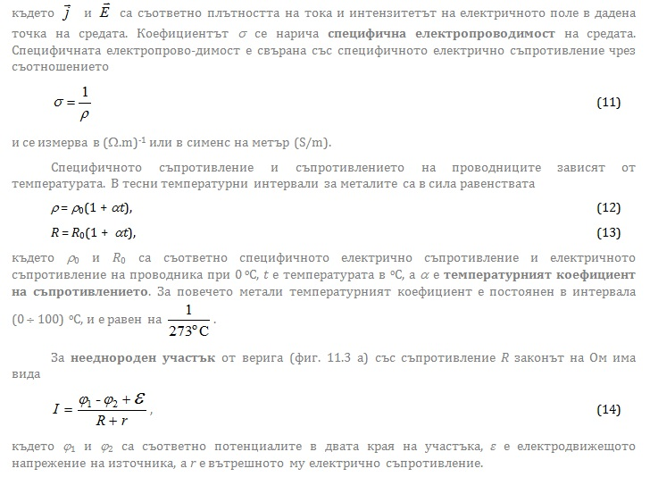
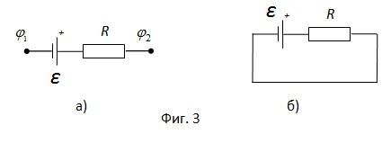
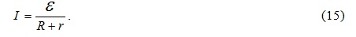

ЕЛЕКТРИЧЕН ТОК
-
Електричният ток представлява насочено движение на електрични заряди. Той възниква при създаване на електрично поле в проводяща среда. Прието е посоката на електричния ток да съвпада с посоката на движение на положителните заряди в полето.
Протичането на електричен ток през металите и полупроводниците не води до изменение на химичния им състав. При протичане на електричен ток в йонните разтвори настъпват химични промени, свързани с преноса на вещество в тях.1. Основни понятия
Конвекционният ток е насочено движение на заредени макроскопични тела в пространството, а токът на проводимост е насочено движение на заредени частици в неподвижен проводник.
За възникване на ток на проводимост е необходимо наличието на свободни електрични заряди – електрони в металите, електрони и дупки в полупроводниците, положителни и отрицателни йони в електролитите, положителни и отрицателни йони и електрони в газовете. Трябва да се създаде и електрично поле, енергията на което осигурява насоченото движение на зарядите на средата.
За да се поддържа електричният ток, между краищата на проводника се създава потенциална разлика. Ако потенциалната разлика не се изменя, в проводника протича постоянен ток. В противен случай токът е променлив.
-
Във всяка електрична верига освен участъци, в които положителните заряди се движат под действие на електричното поле в посока на намаление на потенциала, трябва да съществуват и участъци, в които електричните заряди се пренасят от точки с по-нисък към точки с по-висок потенциал срещу силите на електричното поле. Това се извърша с помощта на т.нар. странични сили в източниците на електродвижещо напрежение (ЕДН). Страничните сили нямат електричен произход. Такива могат да бъдат механичните сили в генераторите, химичните сили в акумулаторите или термоелектродвижещите сили в термоелементите.
Ако в даден участък от електричната верига действат странични сили, той се нарича нееднороден, в противен случай, участъкът е еднороден.
където q е зарядът на носителите, n е концентрацията им, а v е скоростта на насоченото им движение, наречена дрейфова скорост.
Силата на електричния ток се измерва в ампери (А). Силата на тока е един ампер, когато за една секунда през напречното сечение на проводника преминава заряд един кулон (1 А = 1С/1s).
Плътността на електричния ток j е векторна величина, чрез която се характеризира разпределението на тока по сечението на проводника S. Тя се определя от големината на заряда, преминал за единица време през единица площ от напречното сечение на проводника, ориентирана перпендикулярно на посоката на токa. Ако плътността на електричния ток във всяка точка от сечението на проводника е постоянна, в сила е съотношението

2. Закон на Ом
Законът на Ом за еднороден участък от веригата с напрежение U и електрично съпротивление R има вида

Електричното съпротивление се измерва в омове (Ω). Един ом е съпротивлението на проводник, през който протича ток със сила един ампер при прилагане на напрежение един волт (1Ω = 1V/1A). То зависи от размерите на проводника и от вида на материала му. За цилиндричен проводник с дължина L и площ на напречното сечение S електричното съпротивление е

където ρ е специфичното електрично съпротивление на проводника. В SI то се измерва в ом по метър (Ω.m).
В диференциална форма законът на Ом има вида


Ако веригата е затворена (фиг. 3 б), φ 1 =φ 2 и законът на Ом има вида

За проводници, които се подчиняват на закона на Ом, зависимостта на силата на електричния ток от приложеното напрежение I = I (U) (волт-амперната характеристика) e права линия (фиг. 4). Нейният наклон се определя от съпротивлението на проводника. В обикновените проводници съпротивлението не зависи от посоката на тока. Законът на Ом описва линейните явления в електричните вериги. Отклоненията от него отразяват нелинейните явления при протичане на електричен ток и са свързани със зависимостта на съпротивлението на средата от протичащия в нея електричен
ток R = R (I). Върху малки участъци от нелинейната волт-амперна характеристика връзката между силата на електричния ток и напрежението може да се приеме за линейна – на малко изменение на напрежението ΔU съответства пропорционално изменение на силата на тока ΔI или ΔU = R(I)ΔI. R(I) определя наклона на дадения участък от волт-амперната характеристика и се нарича диференциално електрично съпротивление.
В отсъствие на външно електрично поле електроните в проводниците се движат хаотично и средната сила на електричния ток е нула. Във всеки отделен момент от време, обаче, съществуват флуктуации в хаотичните електронни потоци в обема на проводника и се появяват много слаби токове, които променят посоката си непрекъснато. На тези флуктуации се дължи т. нар. “топлинен шум”. Те създават затруднения в работата на приборите, които отчитат много слаби електрични сигнали. По тази причина някои радиотелескопи, усиватели и пр., работещи с висока степен на точност се охлаждат до температурата на течния хелий (около 4 К), при която хаотичното движение на електроните е с ниска интензивност и тези слаби токове почти изчезват. Тогава дори и много слаби сигнали, идващи от космически източници до Земята, могат да се улавят и анализират.© ROGACHEV